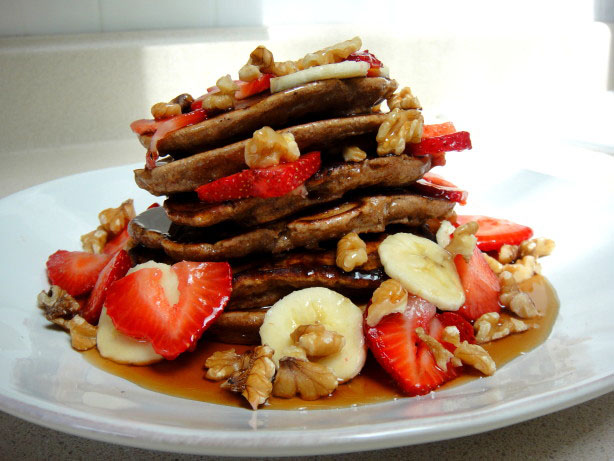

Lazy Sundays Breakfast is proud to be family owned in operated right in the middle of downtown Lexington, Known for the “Best Pancakes” in Kentucky by the Courier Journal, Lazy Sundays has been a breakfast staple ever since they opened their doors in 2010. We strive to make homemade, beautiful breakfast foods that are made with lots of love. Lazy Sundays wants to provide a dining experience that welcomes each guest to be part of our family.
Whatever you need, let us know, because we’re passionate about accommodating you. You're input matters to us and we want to make this the best dining experience possible. At Lazy Sundays, our family recipe �is delicious food and excellent service in a fun and trendy setting. Come join Lazy Sundays today for Breakfast done right
